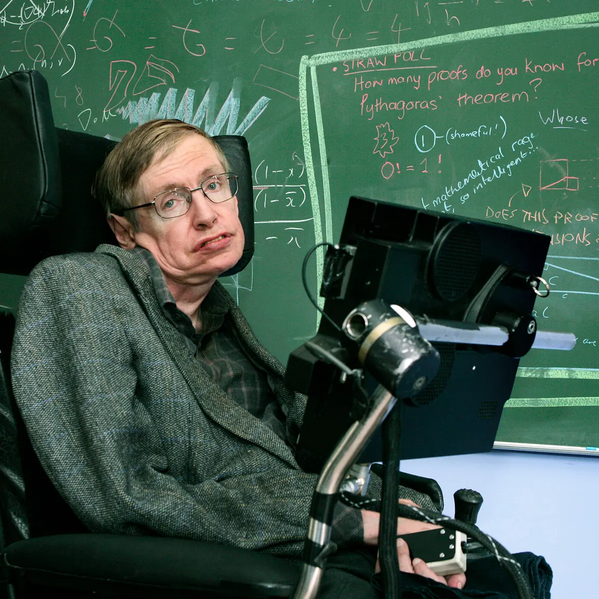

Stephen William Hawking was born on January 8, 1942, in Oxford, England. He was a renowned theoretical physicist, cosmologist, and author. Despite being diagnosed with a rare form of motor neurone disease (ALS) at the age of 21, Hawking made significant contributions to the fields of theoretical physics and cosmology. His most famous work includes the theory of black holes, Hawking radiation, and the best-selling book "A Brief History of Time."
Stephen Hawking's scientific achievements include his work on the singularity theorems in the framework of general relativity, which provided insight into the Big Bang theory. He also made significant contributions to the understanding of black holes and the concept of Hawking radiation, which postulates that black holes can emit radiation and gradually evaporate. His groundbreaking research and publications revolutionized our understanding of the universe.
Stephen Hawking's personal life was marked by his resilience and determination in the face of severe physical limitations. Despite being confined to a wheelchair and communicating through a computerized voice synthesizer, he continued to work, travel, and inspire others. Hawking's life story is a testament to his indomitable spirit and dedication to the pursuit of knowledge and scientific discovery.

"Remember to look up at the stars and not down at your feet." ― Stephen Hawking
Books